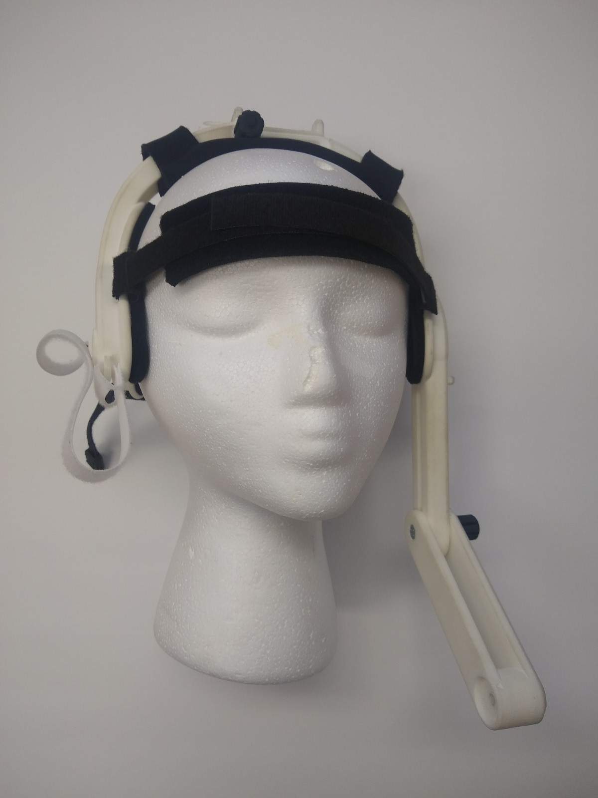
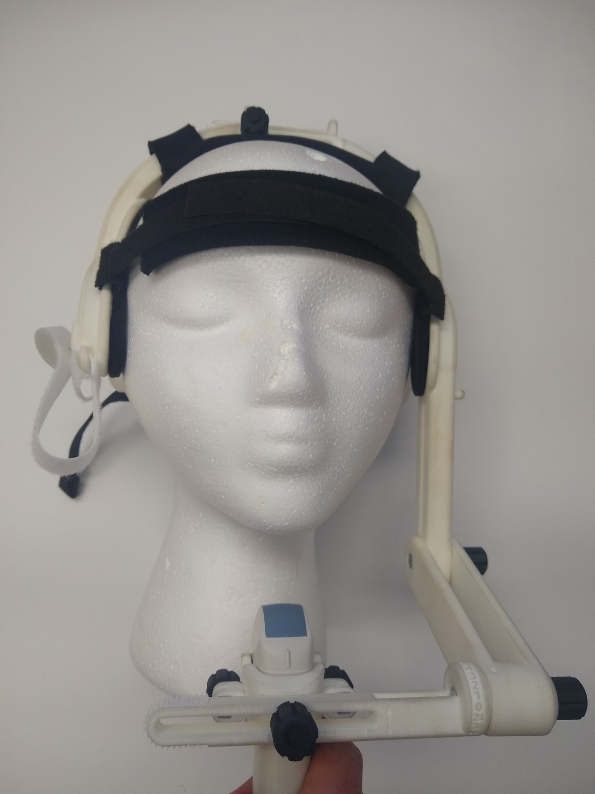
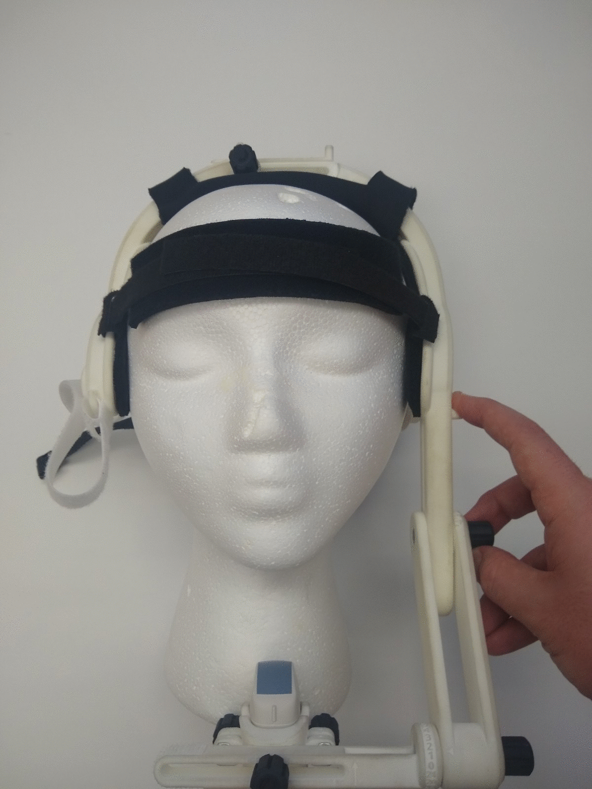
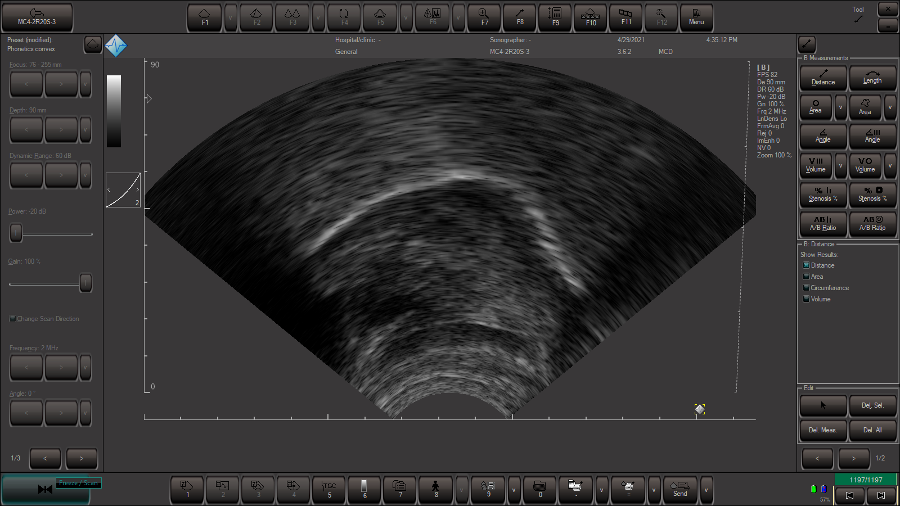
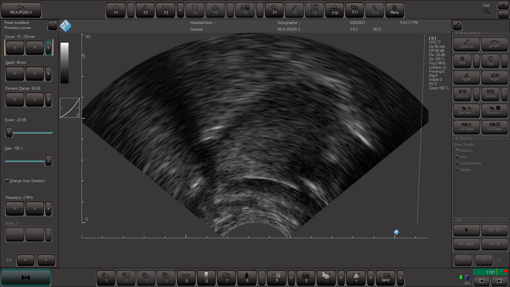
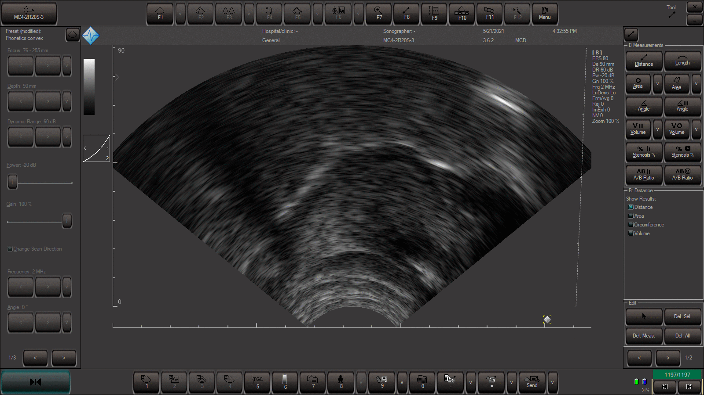
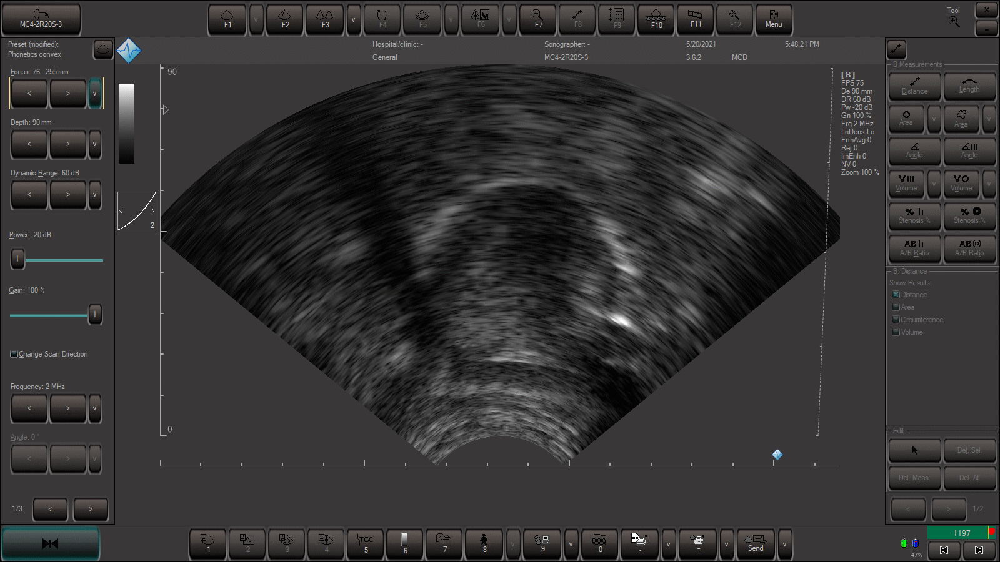

Telemed MicrUs documentation
Ultrasound stabilization and frame of reference
Matthew Faytak
UCLA Phonetics Lab
Table of contents
- Supplies needed
- A tour of the headset
- Basic parts
- Adjustable degrees of freedom
- Choosing a probe
- Headset configuration
- Headset fit
- Attaching the probe
- Fine-tuning probe placement
- Removing the headset
- Landmark tasks
- Swallow recording
- Occlusal plane recording
- Cleanup
Introduction
Instructions for using the lab's ultrasound facilities are split into two parts. This page covers the human interaction element of data collection: how to adjust the stabilization headset and probe to maximize participant comfort while ensuring successful data collection. This other page covers the rest of the equipment setup for collecting data or running in-class demos of speech articulation.
Supplies needed
For headset fitting and the landmark trials, you will need the following supplies. Most of these are consumables stored in the speech physiology cabinet. The probe can be found with the other ultrasound equipment in the camera case.
- The stabilization headset (details below)
- One probe of your choice (details below)
- Ultrasonic gel
- Probe cleaner (Protex)
- A tabletop mirror
- A bottle of water
- Two tongue depressors or plastic butter knives, ideally individually wrapped
- Paper towels
A tour of the headset

Basic parts
- Head cups - two padded U-shaped brackets which latch the helmet on to the cranium above the ears. These stabilize the headset in a side-to-side direction.
- Velcro straps - two straps connect the ear cups in the front and the back and stabilize the headset in a front-back direction. A third hangs from right cup and attaches to the end of probe arm once it is secured. The side strap is also a convenient place to attach a lapel microphone.
- Probe arm - has three parts. The first forms a rigid body with the left head cup. The middle part attaches to this at an adjustable joint. At the end and at a right angle to the middle part is the portion which attaches to the probe cage. This easily detaches from the rest of the headset for easier assembly of the probe cage.
- Probe cage - at the bottom of the probe arm; if properly assembled the cage sits behind the arm. The cage consists of two plastic half-shells molded precisely to one of the two probes which screw together to enclose and secure the probe.
Adjustable degrees of freedom
The probe's orientation with respect to the cranium should be constant through an experimental session. This gives a fixed frame of reference and a consistently located sagittal imaging plane. Only one type of rotation is controllable by adjustment of the headset: pitch, or rotation about a horizontal axis perpendicular to the direction the participant is facing. The other two rotational dimensions, roll and yaw, aren't meant to be adjusted, since these would make the imaging plane non-sagittal.
Some improvised equipment (a right-angle bracket that attaches to the end of the probe arm) can be used to adjust yaw by 90 degrees - that is, to rotate the probe 90 degrees about a vertical axis and image in a coronal plane:

All the degrees of freedom that you'll usually need to adjust relate either to the pitch of the probe or its position. These degrees of freedom are fixed either by the velcro straps or by tightening one or more screws.
Three degrees of freedom apply to tightening the helmet onto the cranium for a snug fit that fixes whatever frame of reference you pick:
- The back strap can be secured relatively close (for shorter/smaller crania) or wide (for longer/larger crania).
- The front strap can be adjusted to accommodate large/wide foreheads.
- The bridge of the headset can be widened or narrowed, bringing the cups closer together or apart for relatively narrow or wide heads.

Three more degrees of freedom determine the position and pitch of the probe:
- The entire probe arm can be moved vertically by loosening the screw attaching the left side of the helmet to the middle part of the probe arm.

- Once loosened, the pitch of the entire probe arm can also be adjusted at this joint.

- The middle and end of the probe arm meet at a joint that allows the portion under the participant's chin to be adjusted for pitch. Combined with pitch adjustments to the entire arm, this offers a lot of flexibility.

- Finally, in case the probe is positioned off-center, the probe can be moved left-right on the probe arm by loosening the single screw that attaches the probe cage to the probe arm. Because the cage seats onto the arm at a right angle, this adjustment on its own doesn't affect probe rotation.

Choosing a probe
The two probes that are available for use are the Telemed MC4 and MC10 convex probes (pictured below). If you need reminding which one is which, these names are the first part of a longer ID that is printed on the plug end of each probe.

The MC4 is somewhat larger and offers the best combination of relatively wide field of view and frame rate. It is also about twice as wide as the MC10, but it fits most people comfortably. We more commonly use the MC4, and all imaging examples in the documentation are from the MC4.
The MC10 is smaller and offers a narrower field of view compared to the MC4. It is half as wide, however, which makes it uniquely suitable for imaging children and more generally people with shorter lower jaws ("weaker" chins).
Configuring the headset
Comfort of the headset fit is quite important since discomfort might lead a participant to try to move the headset or probe. (This is among other, more obvious concerns about participant welfare.)
I have found this process to be the fastest way to find the best tradeoff between participant comfort and image quality. You or your participant can perform any of these steps, according to your comfort level or the degree of social distancing required. (I don't recommend letting participants make their own adjustments to the position of the probe, though, since they tend to place it lower than is optimal.)
Putting on the headset
- Set up the tabletop mirror. This can be useful to see around your participant's head if you are doing the helmet fit. (It can also help the participant see what is going on behind them.)
- Walk the participant through what you're about to do, and sit them in front of the mirror with you behind them. Participants with long hair should tie it back in a ponytail so that it doesn't get caught in the velcro straps. We keep a supply of hair ties handy to avoid this; they can be found in the supply cabinet near the other ultrasound consumables.
- Prepare the headset: detach the end of the probe arm, with the cage attached, from the headset. (Be careful not to lose the washer that sits between the parts of the arm - once the arm is detached it tends to fall out.) Expand all adjustable degrees of freedom on the helmet as wide as they will go, and undo all straps.
- Place the headset over your speaker's head, centering the "cups" above their ears. Adjust the head width by gently compressing the sides together until a snug fit is achieved. Tighten the top screw to secure. If your participant wears glasses, they will want to adjust them after this step.
- Secure the forehead strap, then tighten and secure the strap around the back of the head. At this point the headset is probably firmly attached (pictured). Ask the participant to jiggle or shake their head to ensure that the helmet doesn't shift a lot. If it does, tighten the back strap a bit further. Note that the probe arm is still loosened and not fully assembled. 
Positioning the probe
- Attach the probe to the cage and the cage to the center of the probe arm. Apply gel to the probe. Turn on Echo Wave II if it isn't on already, and make sure the image is not frozen (paused). Applying gel should make some reflections appear in the field of view.
- With the probe arm still fully extended and loosened, reach under the participant's chin and loosely attach the end of the probe arm onto the middle part. Don't tighten the screws yet; you'll need to adjust the pitch of the probe using this degree of freedom. 
- Holding the probe arm in one hand, use your other hand to vertically raise the entire arm on the headset, and guide the probe upwards, until the probe contacts the skin under the chin. There are little fingerholds on the side of the helmet that help you do the vertical raising with a sort of pinching motion (pictured). 
- Now, look at Echo Wave II. If the probe is contacting the skin correctly and the speaker's tongue is not suctioned to the roof of their mouth, you will see a tongue-shaped contour. Adjust the probe's position by hand until this image is centered (pictured for 100% field of view). If the probe is seated too far front and touching the chin bone, swing the arm down/back and then raise the entire arm a bit, which will seat the probe further back. 
- Still holding the probe up with your hand, ask the participant to produce high front vowel [i] and a low back vowel [a] (not a "dentist aaaah", which lowers the jaw far more than is typical in speech). The probe will displace very slightly downward for one or both of these sounds due to muscular activation of the tongue and movement of the jaw. Let this displacement happen and hold the probe in the place where it is left. If the participant produces these vowels again, you should not feel any large displacements of the probe, but should still clearly see the tongue in Echo Wave II. This is our goal: tighten all the probe arm screws when you find this position.
- Take the velcro strap, pull it taut, and attach it to the right end of the probe arm. This should pull the probe slightly to the right. The probe should be positioned as centrally as possible. If it is not, you can tug at the entire headset to rotate it slightly as needed. If this does not seat the probe correctly, you can take the more involved step of adjusting the left-right position of the probe cage on the probe arm, or reattaching the velcro strap.
- You are essentially done at this point (pictured). Give the participant a chance to provide verbal feedback on the fit at this point. This will not only let you know if the fit works, but will also show you if normal speech will displace the helmet. You will know if the fit is too loose if the helmet waggles around with the movement of the jaw. The headset and probe should also not impinge the normal speaking motion of the jaw, and the probe should not press against the larynx, which can be painful.

Landmark tasks
Speakers about to take part in data collection will carry out two tasks at the beginning of the experiment: the swallow task and the bite plate task. These must be done in the same frame of reference as the rest of the recording; once your speaker has done these they cannot adjust the helmet or the probe.
By far the easiest way to record these trials is to use open-ended trials that start and end with the press of a key to record the entire swallowing or biting event. Code blocks which do just this are included in the template experiment.
Swallow task
One of the few rigid landmarks available in ultrasound tongue imaging is the hard palate. To collect a trace of the hard palate, we usually carry out a swallow task before the start of the data collection trials.
- Start the experiment and advance to the swallow task block. As you go through each of the steps below, monitor the visible ultrasound signal on the screen to make sure the palate is visible at some point.
- Start recording the swallow trial. The participant should now suction as much air out of their mouth as possible (their tongue should seal against the top and bottom of their mouth). If a good seal is made, this creates the first opportunity to image the hard palate (pictured).
- They should then take a drink of water out of the water bottle without also pulling air into the oral cavity. This gives a second chance to see the hard palate even though the tongue is withdrawn to make room for the water (pictured). 
- After holding the water in their mouth for a couple of seconds, they should swallow the water in one gulp. This will cause the tongue to "roll" back along the hard palate. This may give you another opportunity to see the tongue suctioned to the hard palate, much like in the first image.
- If the palate wasn't clearly visible at any point in the above process, or there is a bubble of air visible at the top of the oral cavity (pictured below during hold), then repeat the process until a clear palate record is obtained. 

Bite plate task
The pitch of the probe can vary from participant to participant; it will rarely be pointing straight up. If you need to rotate multiple participants' data into a common spatial coordinate system, knowing the orientation of the occlusal plane (the plane made by the teeth when the jaw is closed) can help determine the rotation needed. Collecting the occlusal plane using a bite plate is somewhat simpler than the swallow task:
- Again, start the experiment and advance to the bite plate block. Don't start recording yet.
- Hand the participant a wrapped tongue depressor or plastic butter knife, keeping one for yourself. These will be the bite plates. Unwrap your bite plate and instruct the participant to do the same for theirs.
- Demonstrate the correct position of the bite plate: insert the bite plate as far back as can be comfortably managed, then bite down and leave it held by the teeth (as pictured). It should end up behind your canines so that your premolars or molars are biting down on it and stably holding it.
- Once the participant has the plate in position, start recording. Ask them to press their tongue dorsum (not the tip) up into and "past" the plate as they continue to bite down on it. If this instruction isn't clear, it can help to ask the participant to try to say a high front vowel like [i] while biting down. This should cause a clear straight line to become visible in the tongue contour as it deforms against the bite plate (pictured). This is, more or less, the occlusal plane, provided the speaker is still biting down. 
- Once you see this and record it for a couple of seconds, you're done and can move to data collection.

Removing the headset; cleanup
Once you've finished data collection, cleanup is rather simple.
- To remove the headset, first lower the probe arm away from the participant's chin by loosening the velcro strap and screw which secure either side. Then undo the strap around the back of the head. The headset can usually be lifted off the head at this point. The headset can also be expanded side-to-side by releasing the screw on top of the headset.
- Give your participant some paper towels since their chin and/or neck will have some transmission gel on it. (This is another reason having a desktop mirror is handy.)
- There's no harm in leaving the headset uncleaned for a moment to attend to the participant (debriefing, payment, etc) at this point.
- Remove the probe from the probe cage, and clean the probe cage and probe head using the probe cleaner (Protex) in a spray bottle with a paper towel. Do not use alcohol wipes, or any other alcohol-based cleaner, to clean the probe head.
- Once it's all had a chance to dry, put everything away. You're done!